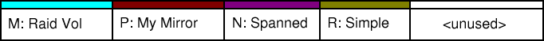
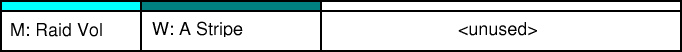
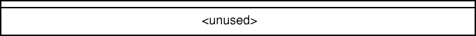

Volumes - Overview
Previous
Next
Filesystems and Containers
In theory, the filesystems and the containers are independent of one
another. In practice there are some limitations. Windows cannot resize FAT
partitions on-the-fly. A dynamic disk can contain any pair of filesystem
and container
Filesystems:
Containers:
- Simple
- Spanned
- Stripe (RAID 0)
- Mirror (RAID 1)
- Stripe with parity (RAID5)
- Mirrored Stripe (RAID 1+0)
Container Types
- Simple
-
This is the basic unit. One container that fills one partition.
Redundancy: None.
Efficiency: Poor.
- Spanned
-
Spanning is achieved by concatenating two partitions together. It is
sometimes know as RAID Linear. This allows the user to extend a volume
using any free space on any disk.
Redundancy: None.
Efficiency: Poor.
- Stripe (RAID 0)
-
By striping the data across two, or more disks, there is a performance
gain for reading and a small hit for writing.
Redundancy: None.
Efficiency: Medium.
- Mirror (RAID 1)
-
This is the simplest redundant RAID type. A disk's data is copied exactly
to one or more disks. It can survive all disk failures
Redundancy: Medium.
Efficiency: Medium.
- Stripe with parity (RAID 5)
-
With a minium of three disks, you can add parity information to a stripe
and get RAID5. This can survive a disk failure, but there is a large hit
to rebuild the data on a new disk.
Redundancy: Good.
Efficiency: Good.
- Mirrored Stripe (RAID 1+0)
-
This requires a minimum of four disks. Take a striped pair of disks and
mirror them completely onto two more disks.
Redundancy: Medium.
Efficiency: Good.
Extending Containers
Starting with this example configuration of disks, we can see how each
container type can be extended, some in several ways. We will deal with
breaking up partitions in the next section.



- Simple
- Extend - By using the free space after
R:
, the container
will still be simple. If some space on another disk is used, the
container type will be promoted to spanned.
- Add mirror - Adding a copy of
R:
will improve access
speed and provide fault tolerance.
- Spanned
- Extend -
N:
is already spanned. This will add another
partition.
- Add mirror - Adding a copy of
N:
will improve access
speed and provide fault tolerance. The mirror could be split across disks
2 and 3, or put entirely on disk 4.
- Stripe
- Extend - Adding to the end of stripe
W:
will require
at least two disks. The partition on disk 3 could be extended, then a
similar amount of space could be used from disks 2 or 4.
- Add mirror - This too will require two disks. They cannot be
the two that the stripe already resides on. This will give the volume
fault tolerance.
- Mirror
- Extend - This will require space on the two original disks or
more others.
- Add another mirror - Volume
P:
already has one mirror.
This action will add a third copy of the volume. It cannot be on the same
disk as an existing mirror. This will increase the volume's fault
tolerance.
- Stripe with parity
- Extend - This will require at least three disks. Each part of
M:
can be extended on the same disk, or one or more others.
- Mirrored Stripe (not shown)
- Extend - This needs space on at least four disks. Like the
stripe with partity, each section can be extended on the same disk, or one
or more others.
- Add another mirror - This is adding a mirror of the underlying
stripe and will need only two disks. They may not be the four already in
use. This will improve the volume's fault tolerance.
Breaking Containers
In this section we find out the results of breaking volumes and removing
disks.
- Simple
- Delete - Remove the partition containing the volume
R:
.
- Spanned
- Delete - Remove all the partitions belonging to the volume
N:
.
- Stripe
- Delete - Remove all the partitions belonging to the volume
W:
.
- Mirror
- Delete - Remove one copy of the underlying volume,
P:
.
- Break - Split the mirror into two identical volumes. For
P:
this would result in two volumes with no fault tolerance. For
volumes with more mirrors, the result would be a smaller mirror and a
simple, spanned, or striped volume.
- Remove - The same as breaking a mirror, except the selected
part is deleted after the split.
- Stripe with parity
- Delete - Remove all the partitions belonging to the volume
M:
.
- Mirrored Stripe (not shown)
- Delete - Remove all the partitions belonging to the volume
- Break - As with breaking a mirror, this will leave two volumes.
One will be a stripe and the other will be a stripe or a mirrored stripe.
- Remove - The same as breaking a mirrored stripe, except the
selected part is deleted after the split.
Disk Failures
If a disk fails, then only mirrored and RAID5 volumes will survive. Simple,
spanned and striped volumes do not have any redundancy. Losing a part of
one of these is losing part of the filesystem. If a mirror loses a disk,
then the fault tolerance is lost, but it can continue. Likewise, RAID5 can
lose one disk. If a new disk is added, then the volume may be repaired.
For mirrors, this means copying the whole volume to a new partition. For
RAID5, all the parity checks must be recalculated, which is very
time-consuming.
Similar effects will be seen if only some of the disks of a group are moved
to another machine. For RAID5, one machine will have enough information to
continue, but the other will not. By splitting a mirror, each computer can
use its volume, but they will not be fault tolerant and they will become out
of sync. Once this happens, they cannot be recombined into one mirror.
Copyright © 2002,
$Date: 2002/06/19 14:04:27 $
L
H
C